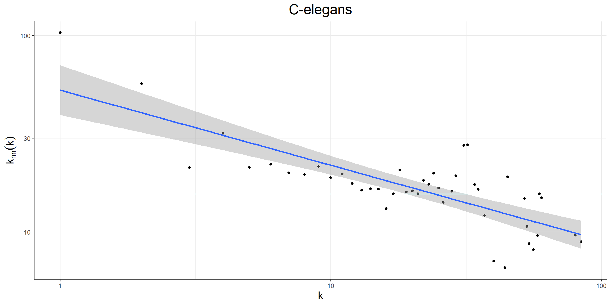
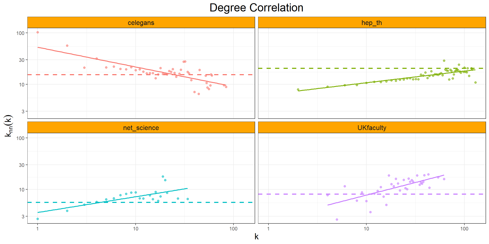
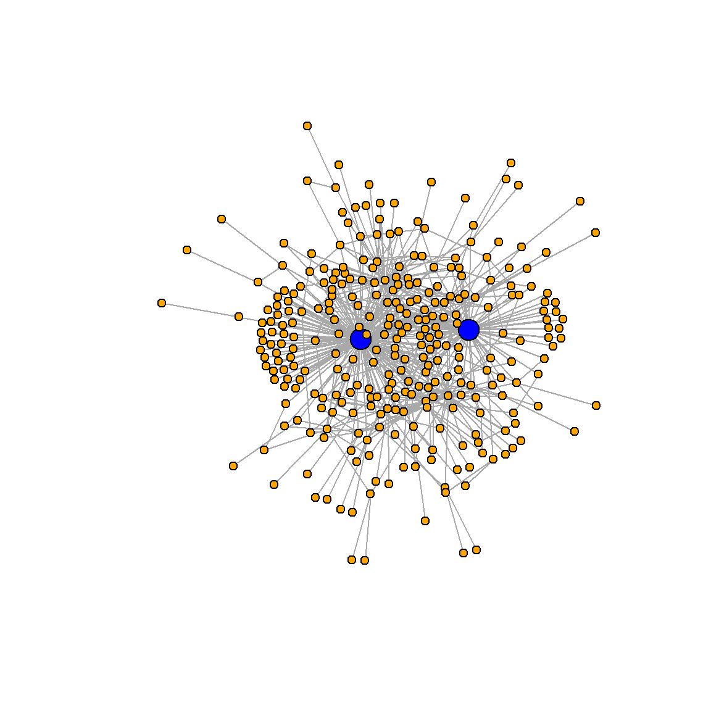
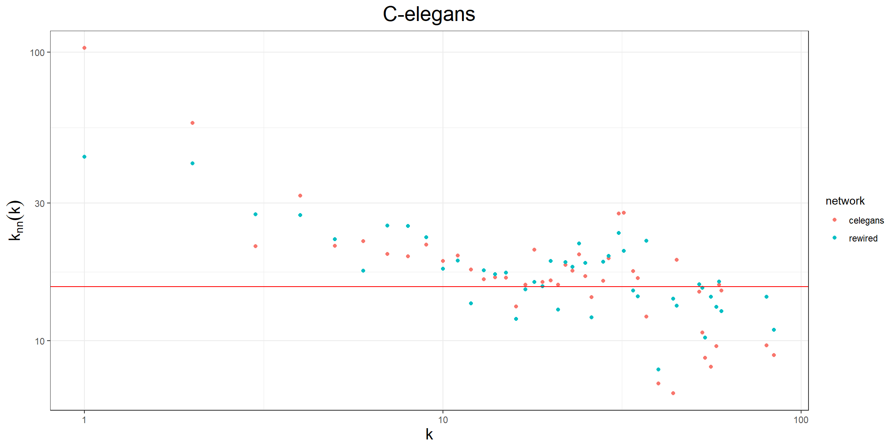

In this document we are going to study some properties of the ties in a network, in particular if they are established among equals or not. This is known as assortativity and dissasortativity respectively and we will see that they are patterns are actual properties of real networks
When we say that links are established among equals or not we are intentionally leaving open what equals mean. This is because in general (see next chapter) we may consider equality with respect to one of the many properties of a node, for example if we are studying a network of people, we may consider the age or we may consider their college or we may consider the number of friends they have.
Note that each of the previous is a different characteristic by the nature of the variable: numerical, categorical or degree. It is, no doubt, with respect to degree the one that will occupy in this section and we leave the analysis of the rest for the next one.
When we consider the degree, what we are actually interested is in looking at the degree of the nodes in the neighborhood of a node, in particular how is the degree of a node with respect to the average degree of its neighborhood. This is what we know as degree correlation.
In this context we may have:
We say that a network displays degree correlations if the number of links between low degree and high degree nodes is different from those that may appear if the links were random. For this we introduce the correlation matrix, \(e_{ij}\), which denotes the probability that we find nodes with degrees \(i\) and \(j\) at the end points of a randomly selected link
\[\begin{equation} \sum_{i,j} e_{ij} = 1 \end{equation}\]
Suppose we select one node with degree \(k\), i.e. \(k\) edges have an ending point on it. We can do it with probability \(p_k\), then the probability that at the end of one of its nodes there is a node with degree \(k\) can be written as
\[\begin{equation} q_k = Ckp_k = \frac{kp_k}{\langle k\rangle} \end{equation}\]
then we can write that
\[\begin{equation} \sum_{i} e_{ij} = q_j \end{equation}\]
and then, for a neutral nework we expect
\[\begin{equation} e_{ij} = q_iq_j \end{equation}\]
However, in most real networks we expect to observe a deviation from this formula due to the existence of different correlations.
One of the most widely used measures for degree correlation is the degree correlation function
\[\begin{equation} k_{nn}(k)=\sum_{k'} k'p(k'|k) \end{equation}\]
where
\[\begin{equation} p(k'|k)= \frac{e_{kk'}}{\sum_{k'} e_{kk'}} = \frac{e_{kk'}}{q_k} \end{equation}\]
is the conditional probability that a link from a node with degree \(k\) connects to a node with degree \(k'\). For a neutral network we can write that \(p(k'|k)=q_{k'}\) and then
\[\begin{equation} k_{nn}(k)=\sum_{k'} k'q_{k'} = \sum_{k'}\frac{k'k'p_{k'}}{\langle k\rangle}=\frac{\langle k^2\rangle}{\langle k\rangle} \end{equation}\]
This boundary will be used as to compare the behaviour of the networks against their neutraility.
The degree correlation is actually measuring the average degree of the neighbours of a node of the degree \(k\), then for each node we can write it in terms of the adjacency matrix as
\[\begin{equation} k_{nn}(k_i) = \frac{1}{k_i}\sum_{j} A_{ij}k_j \end{equation}\]
being the previous expression for \(k_{nn}(k)\) the computation for all the nodes with degree \(k\). We can use this expression to determine the general tendency of the links nature (compared to the randomness of a neutral network). For example, using the C-elegans neural network we can see the following graph

From it we see that the slope is negative, meaning that the average degree of the neighbors decreases as the degree of the node increases, i.e. a disassortative network. In this case hubs tend to ellude hubs. Although not very common, biological networks tend to have this type of behaviour.
If we see the graph, we may be tempted to consider that
\[\begin{equation} k_{nn} = Ak^\mu \end{equation}\]
and then, estimate the slope as a way to estimate the degree correlation. The exponent \(\mu\), is known as the correlation exponent, and gives us the direction of the correlation through its sign (not the value of the correlation itself):
where we should understand the sign from the estimated values of the slope and its standard error, i.e. through the confidence interval or through the p-value of the estimation.
For example, in the case of the C-elegans neural network above we find that
| Correlation_Exponent | Std_Error | p_value |
|---|---|---|
| -0.3824737 | 0.0462356 | 0 |
Which returns a relevant and negative exponent, showing a negative correlation and, then, a disassortative network. The p-value is of the order of \(10^{-10}\) and so, we identify it with zero, which means that the slope is significantly different from 0.
It is worth to insist on the fact that the correlation exponent is not the correlation. We wil compute this in the next chapter.
We can find these degree correlation for different real networks we have used along the course

In the four networks represented in the previous graph we see that three of them: the two of science colaborations and the UK faculty friends are assortative while the C-elegans neural network is dissassortative.
In simple networks the scale-free property of the networks gives rise to a conflict with the degree correlations. The problem arises when we compute the expected number of links connecting nodes with degree \(k\) and \(k'\).
\[\begin{equation} E_{kk'} = e_{kk'}\langle k\rangle N = \frac{kp_kk'p_{k'}}{\langle k\rangle }N \end{equation}\]
let’s generate a network using the BA-model

the nodes in blue are the hubs with degrees 157 and 73 then, applying the formula above to them with find that the expected number of links between them is
## [1] 10.2148approximatedly 10 links to comply the neutral network! While we are allowing for only one link between them. It can be proved (see the book chapter 7) that there exists a structural cutoff, \(k_s\), such that when exceeded the expected number of links connecting them is greater than 1. This cutoff is
\[\begin{equation} k_s \sim \left(\langle k\rangle N\right)^{1/2} \end{equation}\]
remember that for scale-free networks the maximum degree was \(k_{max}\sim N^{1/(\gamma-1)}\), then we can identify different regimes depending on \(\gamma\) as
| \(\gamma\) | Regime | Properties |
|---|---|---|
| \(\geq 3\) | No Structural Cutoff | \(k_{max}\) is smaller than the \(k_s\) |
| \([2,3)\) | Structural Disassortativity | The network has fewer links among its hubs than predicted |
If we find less links than the ones predicted in a neutral network between hubs, this is a form of disassortativity which does not come from the properties of the nodes connected but by the structure of the network itself (simple network), hence the name structural disassortativity.
To identify if the disassortativity of a network is structural or not we can make use of a random rewiring of the links preserving the degree distribution. In the case of the C-elegans we find the following graph

where the red dots are the original points and the blue ones come from the rewiring. Note than both have the same direction which implies that the disassortativity is induced by the scale-free nature of the network and not by other effects.
As a final comment, it must be clear that the structural cutoff only produces disassortative networks, never assortative.
Note that along the lecture we have been discussing comparisons against a neutral network which is just nothing more than a random network. Then the degree correlation may be affecting the properties we saw with respect to the phase transition and the giant components. In fact:
There are some other impacts of the degree correlation, refer to the book to see some of them